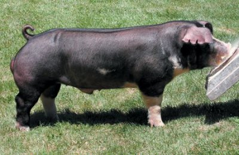
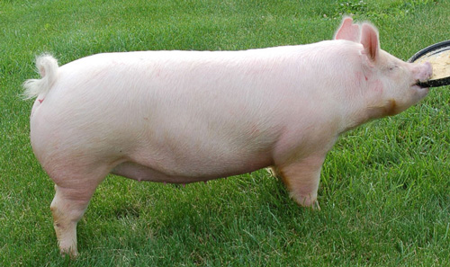
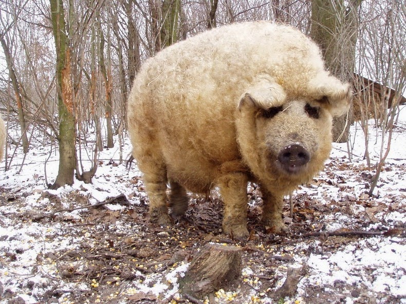
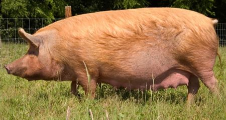
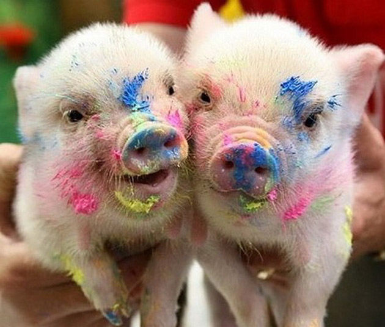
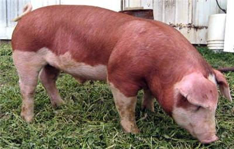
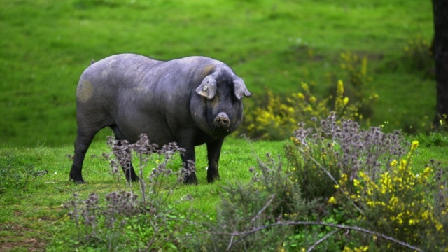
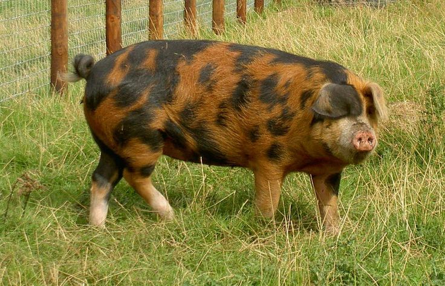
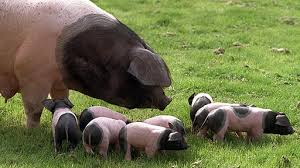

Pig-Profile
Home
Type
Food
Production
Pig Type

Poland China Pig

American Yorkshire Pig

Mangalica Pig

Tamworth Pig

Cute Miniature Pig

Hereford Pig

Iberian Pig

Oxford Sandy and Black Pig

Swabian-Hall Swine Pig